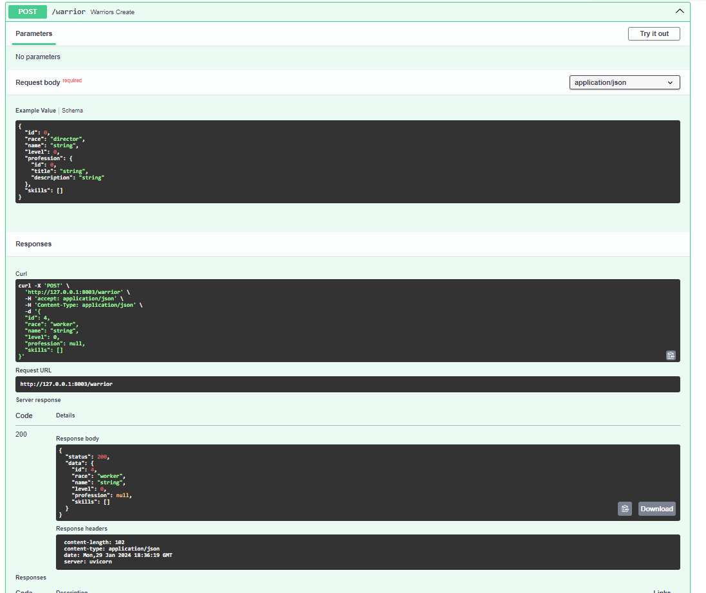

Практика 2.1. Создание базового приложения на FastAPI
Для выполнения лабораторной и всех практических работ рекомендуется использовать версию Python 3.10+
Запуск
FastAPI — это веб-фреймворк Python, предоставляющий реаализацию быстрого и легкого современного API, который проще в
освоении по
сравнению с другими веб-фреймворками на основе Python, такими как Flask и
Django. FastAPI относительно новый, но его сообщество растет. Он широко используется при создании веб-API и
развертывании моделей машинного обучения.
У FastAPI есть отличная документация частично переведенная на множество языков (в том числе и русский) с подробным описанием работы методов и различными советами по реализации типовых решений. В ходе текста лабораторных и практических работ неоднократно будут появляться ссылки на документацию, поясняющую используемые решения, методы и классы.
Установка и запуск приложения
По сравнению с Django, FastAPI не требует длительной установки и настройки приложения, чтобы его запустить достаточно выполнить несколько простых операций:
- Создать новый проект в IDE, реализовать виртуальное окружение
- Установить FastApi cопутствующими библиотеками написав в командной строке:
- Реализовать файл
main.pyв котором будет написан следующий код:
В этом коде реализуется класс FastAPIотвечающий за реализацию
сервера и возможность реализации методов представления. Обращаясь к созданному объекту посредством декоратора,
вызывается GET-метод @app.get, в который передается адрес эндпоинта. Под декоратором реализуется функция, возвращающее
текстовое значение.
Замечание
get может возвращать любые значения имеющие метод str
- Для запуска реализованного приложения необходимо воспользоваться веб-сервером uvicorn, поддерживающим FastAPI. Запустить сервер можно написав команду:
uvicorn - команда для запуска сервера, main:app - название файла и переменной FastAPI, --reload - автоматически
перезапускает сервер при изменениях в коде приложения.
Замечание
Если необходимо указать порт для запуска приложения, в параметрах указывается следующее значение: --port [номер_порта]
Результат
-
По адресу
127.0.0.1:8000будет возвращаться значение, указанное для созданной get-функции -
По адресу
127.0.0.1:8000/docsпоявится автоматически сгенерированная документация к коду
Методы и виртуальная БД
Создание тестовой БД
Для тестирования и реализации основных запросов необходимо создать временную БД, чтобы продемонстрировать возможность PI взаимодействия внутри фреймворка. В качестве тестовой базы используется упрощенная модель Воинов, представленная в прошлых лабораторных работах.
В файле main.py после объявления переменной приложения создадим в оперативной памяти набор данных:
Временная БД
temp_bd = [{
"id": 1,
"race": "director",
"name": "Мартынов Дмитрий",
"level": 12,
"profession": {
"id": 1,
"title": "Влиятельный человек",
"description": "Эксперт по всем вопросам"
},
},
{
"id": 1,
"race": "worker",
"name": "Андрей Косякин",
"level": 12,
"profession": {
"id": 1,
"title": "Дельфист-гребец",
"description": "Уважаемый сотрудник"
},
},
]
С этой переменной (temp_bd) мы будем взаимодействовать при реализации базового CRUD-интерфейса.
Создание АПИ-эндпоинтов
Для реализации CRUD-API в базовой имплементации приложения необходимо использовать специальные методы, описывающие
HTTP-запросы внутри веб-приложения. Все подобные методы вызываются через переменную реализации класса FastAPI. Их
параметры и возможные реализации представлены
в документации.
Ниже представлен список методов, необходимых для реализации простого CRUD-интерфейса. Все запросы можно выполнить по
адресу 127.0.0.1:8000/docs
- Запрос всех воинов:
- Запрос конкретного воина:
@app.get("/warrior/{warrior_id}")
def warriors_list(warrior_id: int):
return [warrior for warrior in temp_bd if warrior.get("id") == warrior_id]
- Добавление воина:
@app.post("/warrior")
def warriors_list(warrior: dict):
temp_bd.append(warrior)
return {"status": 200, "data": warrior}
- Удаление воина:
@app.delete("/warrior/delete{warrior_id}")
def warrior_delete(warrior_id: int):
for i, warrior in enumerate(temp_bd):
if warrior.get("id") == warrior_id:
temp_bd.pop(i)
break
return {"status": 201, "message": "deleted"}
- Редактирование воина:
@app.put("/warrior{warrior_id}")
def warrior_update(warrior_id: int, warrior: dict):
for war in temp_bd:
if war.get("id") == warrior_id:
war = warrior
return temp_bd
Замечание
В некоторых запросах использовались параметры пути и тела запроса, подробнее можно прочитать в документации
В такой реализации сразу бросаются в глаза проблемные места системы: возможность передачи данных любого формата, отсутствие возможности идентификации объектов и их сериализации. В следующем разделе приведено решение этой проблемы.
Pydantic, Аннотирование и документирование
От разработчиков FastAPI существует множество дополнительных библиотек, который могут использоваться по отдельности или интегрируясь в FastAPI-приложение. Одной из таких библиотек является Pydantic упрощающая аннотирование и сериализацию объектов.
Внимание!
Для понимания того что происходит в этом разделе, рекомендуется прочитать материал про аннотацию типов в языке Python.
В предыдущем разделе было реализовано простое API без какой-либо валидации данных: такая логика не позволяет обрабатывать входящие и исходящие запросы, а также позволяет записать любые данные во временную БД.
Обновление тестовой БД и создание моделей
Для выполнения задания расширим временную базу, добавив воину список умений:
Временная БД (расширенная)
temp_bd = [
{
"id": 1,
"race": "director",
"name": "Мартынов Дмитрий",
"level": 12,
"profession": {
"id": 1,
"title": "Влиятельный человек",
"description": "Эксперт по всем вопросам"
},
"skills":
[{
"id": 1,
"name": "Купле-продажа компрессоров",
"description": ""
},
{
"id": 2,
"name": "Оценка имущества",
"description": ""
}]
},
{
"id": 2,
"race": "worker",
"name": "Андрей Косякин",
"level": 12,
"profession": {
"id": 1,
"title": "Дельфист-гребец",
"description": "Уважаемый сотрудник"
},
"skills": []
},
]
Для каждого типа объекта БД необходимо реализовать собственную Pydantic-модель.
Для большей читаемости кода и разделения
его на фрагменты рекомендуется создать новый файл в репозитории models.py
- Импортируемые зависимости
- Модель воина и перечисление рас
class RaceType(Enum):
director = "director"
worker = "worker"
junior = "junior"
class Warrior(BaseModel):
id: int
race: RaceType
name: str
level: int
profession: Profession
skills: Optional[List[Skill]] = []
Замечание
Использование класса Enum при аннотировании аналогично параметру choices для поля в Django,
для большего понимания рекомендуется прочитать пример из
документации
- Модель профессии
- Модель умения
Аннотация эндпоинтов
Проаннотируем все ранее созданные запросы посредством моделей.
Стоит заметить, то что используемые данные во временной БД хранятся в формате dict, поэтому, линтеры некоторых IDE и редакторов могут обозначать возвращаемые данные как некорректные.
Запросы с использованием Pydantic моделей и дополнительной аннотацией
@app.get("/warriors_list")
def warriors_list() -> List[Warrior]:
return temp_bd
@app.get("/warrior/{warrior_id}")
def warriors_get(warrior_id: int) -> List[Warrior]:
return [warrior for warrior in temp_bd if warrior.get("id") == warrior_id]
@app.post("/warrior")
def warriors_create(warrior: Warrior) -> TypedDict('Response', {"status": int, "data": Warrior}):
warrior_to_append = warrior.model_dump()
temp_bd.append(warrior_to_append)
return {"status": 200, "data": warrior}
@app.delete("/warrior/delete{warrior_id}")
def warrior_delete(warrior_id: int):
for i, warrior in enumerate(temp_bd):
if warrior.get("id") == warrior_id:
temp_bd.pop(i)
break
return {"status": 201, "message": "deleted"}
@app.put("/warrior{warrior_id}")
def warrior_update(warrior_id: int, warrior: Warrior) -> List[Warrior]:
for war in temp_bd:
if war.get("id") == warrior_id:
warrior_to_append = warrior.model_dump()
temp_bd.remove(war)
temp_bd.append(warrior_to_append)
return temp_bd
После обновления кода для представлений изменилась документация к разработанному API (127.0.0.1:8000/docs). Теперь для
каждого запроса
отображается описание в каком формате передаются и принимаются данные для каждого реализованного метода.

Внимание!
При аннотировании Post-запроса на создание воина /warrior использовался тип TypedDict. Pydantic для
Python 3.10 не поддерживает импорт такого типа аннотирования напрямую из typing, поэтому импорт необходимо
произвести из библиотеки typing_extensions:
Практическое задание
машины, аннотирование